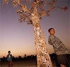

|
|
Tree of LifeContemporary sculpture by Kester, Hilario Nhatugueja, Fiel dos Santos and Adelino Serafim Mate Maputo, Mozambique, 2004 This sculpture, made from decommissioned weapons, was produced by four Mozambican artists. It is a product of the Transforming Arms into Tools project. On display in the Great Court until 28th August |
The Ford Centre for Young Visitors The Ford Centre for Young Visitors is part of the Clore Education Centre and provides lunch facilities, lavatories and coat cupboards for use by up to 1000 children per day. When you book a visit you will be given confirmed cloakroom facilities for all your group and a confirmed 30 minute time slot for lunch. When you arrive at the museum, please check in at the Ford Centre. The facilities in the Centre are in high demand and we advise you to book as early as possible to avoid disappointment. Groups without bookings are very unlikely to be able to use the Centre. The Ford Centre for Young Visitors is made possible by Ford Motor Company. ICT The Clore Education Centre also includes a dedicated ICT room, with provision for up to 30 users at 15 PC workstations. COMPASS and the Ancient Civilizations series of websites can be accessed there. We are eager to explore how you can use the ICT room to complement your visit to the Museum. The room is available for use on Mondays, Wednesdays and Fridays, and an experienced member of staff will be on hand to assist with ICT-based teaching. It can also be booked at other times, subject to staff availability. Please contact Paul Clifford, our Learning Resources Support Officer to discuss your requirements: telephone 020 7323 8778.
|
The Great Court at The British Museum |
|||
|
home |
visit |
what's on |
join |
shop |
learning |
COMPASS |
world cultures |
sitemap |
contact us |
copyright
© The British Museum, 2002 |
|||||